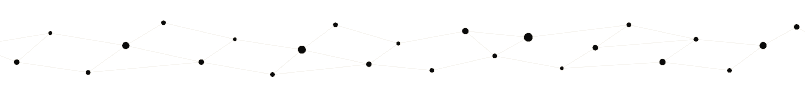

Five days, five questions. We treat intelligence — human and artificial — as a single problem seen from many sides: philosophy of mind, cognitive science, and the machine-learning systems now sitting at the center of the conversation.
No prior background is assumed. Each morning opens with a framing question and closes with a discussion; afternoons are hands-on. Expect to read closely, argue carefully, and build small things.
Consciousness, intentionality, and the hard problem. What we mean when we say something "thinks."
Turing's test, the Chinese Room, and what today's language models do and don't settle.
From reflexes to gradient descent. How brains and networks change with experience — and where the analogy breaks.
Agency, bias, and accountability when decisions are delegated to systems we only partly understand.
Where the field is heading, and how to keep thinking clearly about claims that outpace the evidence. Final projects.